Project 2
Fun with Filters and Frequencies
Wenhao Ruan · Fall 2026
Part 1: Fun with Filters
In this part, we will build intuitions about 2D convolutions and filtering. We will begin by using the humble finite difference as our filter in the x and y directions. $$ D_x = \begin{bmatrix} 1 & 0 & -1 \end{bmatrix}; \quad D_y = \begin{bmatrix} 1 \\ 0 \\ -1 \end{bmatrix}; \quad \text{Box} = \frac{1}{81}\underbrace{\begin{bmatrix} 1 & \cdots & 1 \\ \vdots & \ddots & \vdots \\ 1 & \cdots & 1 \end{bmatrix}}_{9 \times 9}$$
Part 1.1: Convolutions from Scratch
I implemented 2D convolution with numpy only. The kernel is flipped first, and the image is zero-padded by kH // 2 and
kW // 2 on each side so the output has the same size as the input.
Four loops: loop over every output pixel, then over every kernel entry.
def conv2d_4loop(img, kernel, padding_value = 0):
'''
Four loops to construct the 2D convolution with padding
'''
kernel = kernel[::-1, ::-1] # Flip
kH, kW = kernel.shape
H, W = img.shape
img_padded = np.pad(img, ((kH // 2, kH // 2), (kW // 2, kW // 2)), mode='constant', constant_values = padding_value)
out = np.zeros((H, W))
for height in range(H):
for width in range(W):
for k_height in range(kH):
for k_width in range(kW):
out[height, width] += img_padded[height + k_height, width + k_width] * kernel[k_height, k_width]
return outTwo loops: the two inner loops are replaced by an element-wise product of the image window and the kernel, followed by np.sum.
def conv2d_2loop(img, kernel, padding_value = 0):
'''
Two loops to construct the 2D convolution with padding
'''
kernel = kernel[::-1, ::-1] # Flip
kH, kW = kernel.shape
H, W = img.shape
img_padded = np.pad(img, ((kH // 2, kH // 2), (kW // 2, kW // 2)), mode='constant', constant_values = padding_value)
out = np.zeros((H, W))
for height in range(H):
for width in range(W):
out[height,width] = np.sum(img_padded[height:height+kH, width:width+kW]*kernel)
return outSciPy baseline:
def conv2d_scipy(img, kernel):
return convolve2d(img, kernel, mode='same')Each implementation is applied to my grayscale self-portrait with a 9×9 box filter, \(D_x\), and \(D_y\), and timed:
def show_filters(img, conv):
fig, axes = plt.subplots(1, 3, figsize=(15, 5.4), layout='constrained')
for ax, k, name in zip(axes, [box_filter, Dx, Dy], ['box', 'dx', 'dy']):
start_time = time.time()
ax.imshow(conv(img, k), cmap='gray')
ax.set_xlabel(name, fontsize=20)
ax.set_xticks([])
ax.set_yticks([])
end_time = time.time()
elapsed_time = end_time - start_time
print(f"Time for {name} filter: {elapsed_time:.4f} seconds")
plt.savefig(f'./images/{conv.__name__}_filters.png',dpi = 100)
plt.show()
print(f"Finished showing filters for {conv.__name__}")
for conv in [conv2d_4loop, conv2d_2loop, conv2d_scipy]:
show_filters(img, conv)Figure 1 shows the results of applying the different convolution implementations to my self-portrait with various filters.
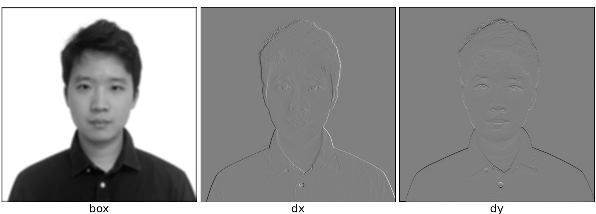
Figure 1a: Four-loop convolution 5.9437s / 0.2555s / 0.2941s
Figure 1b: Two-loop convolution 0.4588s / 0.4475s / 0.4387s
Figure 1c: scipy.signal.convolve2d 0.0217s / 0.0027s / 0.0040s
Runtime comparison and boundary handling
From the timing results above, we can see that the four-loop convolution is the slowest, followed by the two-loop convolution,
and the scipy.signal.convolve2d implementation is the fastest.
For the boundary, the four-loop and two-loop convolutions use zero padding, while
the scipy.signal.convolve2d implementation uses the default
boundary='fill', fillvalue=0, which is zero padding as well (mode='same' only crops the output to the input size). So all three implementations
handle boundaries using zero padding.
Part 1.2 Finite Difference Operator
Show the partial derivatives of the cameraman image
Use scipy.signal.convolve2d to convolve the image with finite difference filters \(D_x\) and \(D_y\)
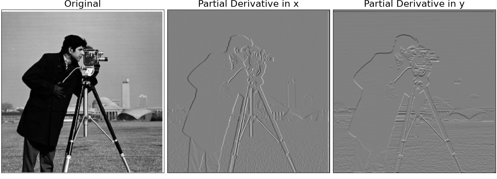
Figure 2: Partial derivatives of the cameraman image using the finite difference operator
Compute and show the gradient magnitude image
The derivative value of this image can be obtained by computing the convolution of the image with the finite difference filters \(D_x\) and \(D_y\) $$G_x = \frac{\partial I}{\partial x} = I * D_x, \quad G_y = \frac{\partial I}{\partial y} = I * D_y$$ And the gradient magnitude can be computed as $$G = \sqrt{G_x^2 + G_y^2}$$ Figure 3 shows the gradient magnitude image obtained from the partial derivatives. Also we binarize the gradient magnitude image using different thresholds to highlight the edges and eliminate noise.
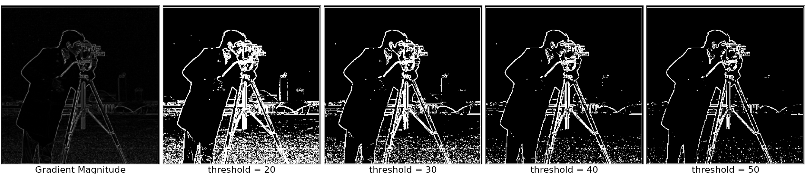
Figure 3: Gradient magnitude of the cameraman image with thresholds
As shown in Figure 3, the gradient magnitude image highlights the edges in the cameraman image, and applying different thresholds helps in reducing noise. We find that threshold 40 works well for this image.
Part 1.3 Derivative of Gaussian (DoG) Filter
We use a Gaussian filter to blur the original image. First, we use cv2.getGaussianKernel() to create a 1D Gaussian kernel,
and then take the outer product of the 1D kernel with itself to create a 2D Gaussian filter \(K_G\). Then, we compute the derivative of
Gaussian (DoG) filters by convolving \(K_G\) with the finite difference filters \(D_x\) and \(D_y\) (As shown in Figure 4). The equation
can be written as:
$$
DoG_x = K_G * D_x; \quad DoG_y = K_G * D_y
$$
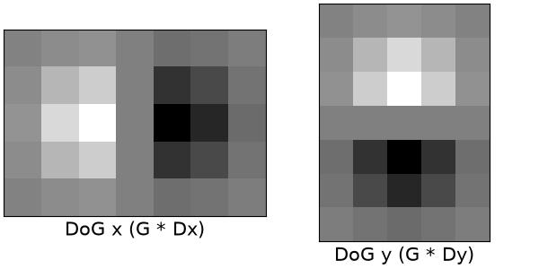
Figure 4: Derivative of Gaussian (DoG) filters
Create a blurred version of the original image by convolving it with a Gaussian filter
In this step, we create a blurred version of the original image by convolving it with a Gaussian filter first, and then compute the gradient magnitude of the blurred image. The equation can be written as: $$ I_K = I * K_G; \quad DoG_1 = \sqrt{(I_K * D_x)^2 + (I_K * D_y)^2} = \sqrt{((I * K_G) * D_x)^2 + ((I * K_G) * D_y)^2} $$
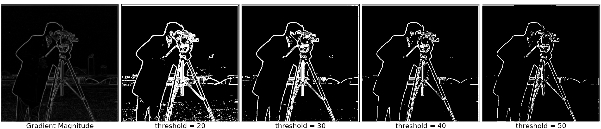
Figure 5: Gradient magnitude of the cameraman image after applying Gaussian blur (blur first, then differentiate)
We find that blurring the image with a Gaussian filter helps in reducing noise and makes the edges more prominent when computing the gradient magnitude. After applying the Gaussian blur, threshold 40 works well for this image.
Convolve the gaussian kernel with \(D_x\) and \(D_y\) first
In this step, we first convolve the Gaussian kernel with the derivative filters \(D_x\) and \(D_y\) to obtain the smoothed derivative filters. Then, we convolve the original image with these smoothed derivative filters to compute the gradient magnitude. $$ D_x' = K_G * D_x, \quad D_y' = K_G * D_y;$$ $$DoG_2 = \sqrt{(I * D_x')^2 + (I * D_y')^2} = \sqrt{(I * (K_G * D_x))^2 + (I * (K_G * D_y))^2} $$
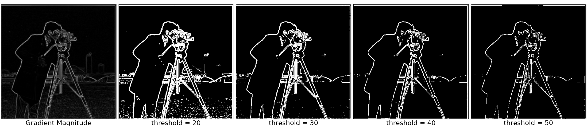
Figure 6: Gradient magnitude of the cameraman image using the DoG filters (differentiate the Gaussian first)
Figures 5 and 6 show the difference between blurring the image first and differentiating the Gaussian filter first. We can observe that both approaches produce the same result. This is because the convolution operation is associative, meaning that the order of convolution does not affect the final result. $$ (I * K_G) * D_x = I * (K_G * D_x), \quad (I * K_G) * D_y = I * (K_G * D_y) $$ $$ DoG_1 = \sqrt{((I * K_G) * D_x)^2 + ((I * K_G) * D_y)^2} = \sqrt{(I * (K_G * D_x))^2 + (I * (K_G * D_y))^2} = DoG_2 $$
Bells & Whistles
Compute the image gradient orientations without using built-in functions
Since we can't use built-in functions such as arctan or arccos, we propose using the Taylor series expansion to approximate the arctangent function, which can be expressed as: $$ \arctan(x) \approx \sum_{n=0}^\infty (-1)^n \frac{x^{2n+1}}{2n+1} = x - \frac{x^3}{3} + \frac{x^5}{5} - \frac{x^7}{7} + \cdots \quad \text{for } |x| \le 1. $$ Since the Taylor series approximation is valid for \(|x| \leq 1\), we need to ensure that the ratio of the gradient components falls within this range. Firstly, we take the absolute values of the gradient components, then we apply tangent half-angle formula to ensure that the ratio falls within \([0, 1]\). We assume a, b are the absolute values of the gradient components while c is the length of the hypotenuse. The tangent half-angle formula is given by: $$ \tan\left(\frac{\theta}{2}\right) = \frac{\sin\theta}{1 + \cos\theta} = \frac{b/c}{1 + a/c} = \frac{b}{c + a}. $$ since \(a + c \ge b\), the ratio \(t = \frac{b}{c + a}\) always falls within the range \([0, 1]\). Therefore, we can use the Taylor series approximation to estimate the gradient orientation \(\theta\) as: $$ \theta = 2 \arctan\left(t\right) \approx 2 \left( t - \frac{t^3}{3} + \frac{t^5}{5} - \frac{t^7}{7} + \cdots \right). $$ Finally, we change the orientation based on the signs of the original gradient components to ensure the correct quadrant for the angle.
Visualize the gradient orientations with HSV color space
Figure 7 is the visualization of the gradient orientations using the HSV color space.
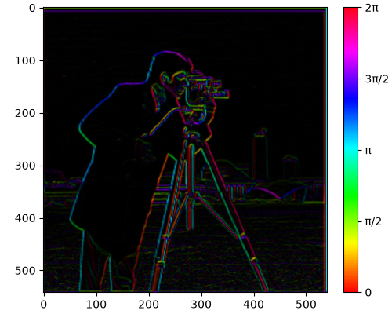
Figure 7: Visualization of the gradient orientations using the HSV color space.
Part 2: Fun with Frequencies
Part 2.1 Image Sharpening
As introduced before, gaussian filter can blur the image. If we use the original image to subtract the blurred image, we can obtain the high-frequency components of the image, which can then be added back to the original image to achieve sharpening effect. The equation for image sharpening can be written as: $$I_{\text{blurred}} = I * G(\sigma), \quad I_{\text{high}} = I - I_{\text{blurred}}, \quad I_{\text{sharpened}} = I + \alpha I_{\text{high}}$$ Figures 8 and 9 show the results of image sharpening for the Taj Mahal and a temple, respectively. As can be seen, as \(\alpha\) increases, the sharpening effect becomes more pronounced.
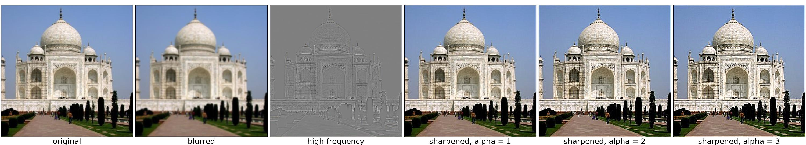
Figure 8: Original, blurred, high frequency and sharpened images of the Taj Mahal (\(\sigma = 1\)).
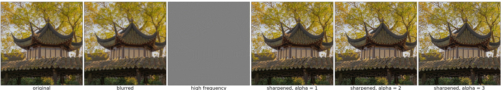
Figure 9: Original, blurred, high frequency and sharpened images of a temple (\(\sigma = 5\)).
Pick a sharp image, blur it and sharpen it again
Figure 10 shows the results of sharpening, blurring, and re-sharpening the Taj Mahal images (\(\alpha = 1, \sigma = 1\)). It is noted that re-sharpen cannot restore the high-frequency details that were lost during the blurring process. The re-sharpen process can only enhance the existing high-frequency details from the blurred image.
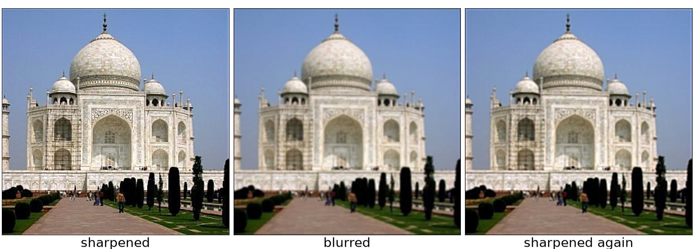
Figure 10: Sharpened, blurred, and re-sharpened images of the Taj Mahal.
Part 2.2 Hybrid Images
High and Low Frequency Filters
The basic idea is that high frequency tends to dominate perception when it is available, but, at a distance, only the low frequency (smooth) part of the signal can be seen. The first thing is to build the low-pass filter to extract the low frequency components of the image, the low-pass filter is also known as a 2D Gaussian filter: $$ G(\sigma) = \frac{1}{2\pi\sigma^2} \exp\left({-\frac{x^2 + y^2}{2\sigma^2}}\right) $$ And the kernel size is typically chosen as: $$ \text{kernel size} \approx 6\sigma + 1 $$ For the high-frequency filter, we can simply subtract the gaussian matrix from the impulse matrix which is defined as: $$ H(\sigma) = I - G(\sigma); \quad I = \underbrace{\begin{bmatrix} 0 & & \cdots & & 0\\ 0 & \cdots & 1 & \cdots & 0 \\ 0 & & \cdots & & 0 \end{bmatrix}}_{k \times k}; \quad k = 6\sigma + 1 $$
Hybrid Image Construction
To construct a hybrid image, we combine the low-frequency component of one image with the high-frequency component of another image. Mathematically, this can be expressed as: $$ \text{Hybrid Image} = \text{Low-Frequency Image} + \text{High-Frequency Image} $$ Figure 11 shows an example of a hybrid image constructed from Derek and Nutmeg images. In this figure we selected the low-frequency component of Derek and the high-frequency component of Nutmeg, since the cat is more prominent in the high-frequency component with its fur. After some experimentation, we select \( \sigma_{\text{low}} = 12, \sigma_{\text{high}} = 4 \) for the Gaussian filters used in this example.
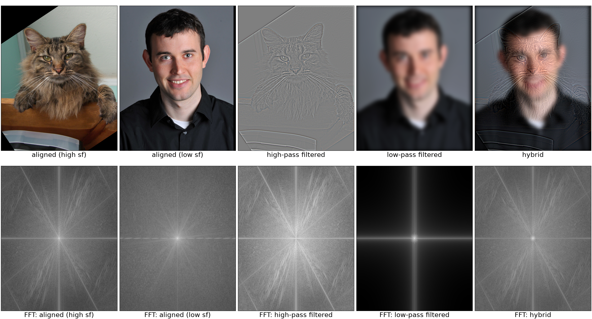
Figure 11: Hybrid image construction process for Derek and Nutmeg images.
Other examples of hybrid images
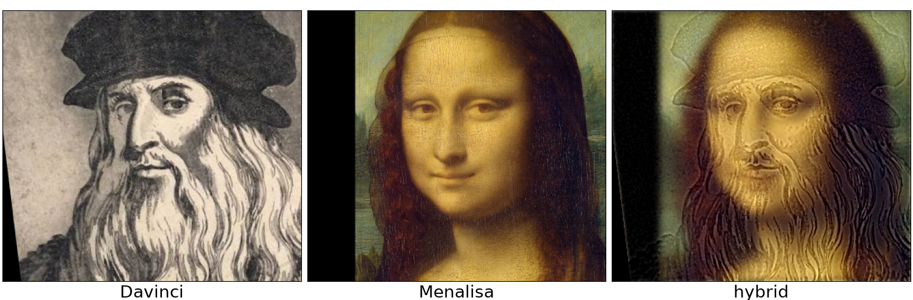
Figure 12: Hybrid image construction process for Mona Lisa and Da Vinci images.
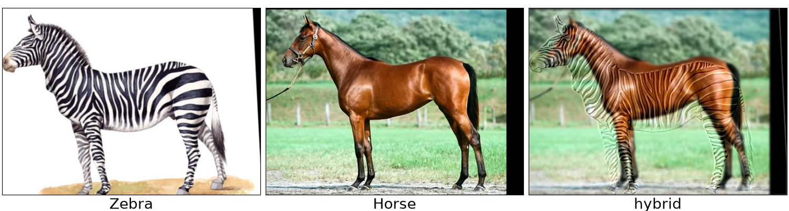
Figure 13: Hybrid image construction process for zebra and horse images.
Bells & Whistles
Try using color to enhance the effect
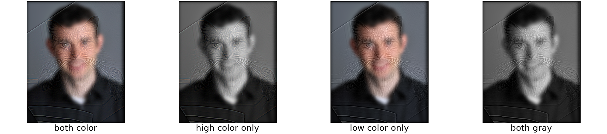
Figure 14: Hybrid image using color to enhance the effect.
In this example, color is important for low-frequency images. For high-frequency images, the color is almost negligible.
Multi-resolution Blending and The Oraple Journey
Part 2.3 Gaussian and Laplacian Stacks
In this part, we calculate the Gaussian and Laplacian stacks for the images.
The gaussian stack is constructed by repeatedly applying a Gaussian filter g_i to the image,
resulting in a series of progressively blurred images. The Laplacian stack is the difference between consecutive levels of
the gaussian stack, except for the last level which is the same as the last level of the gaussian stack. The equations can
be written as:
$$
G_i = I * g_0 * \cdots * g_i, \quad \text{for } i = 0, \dots, N-2
$$
$$
L_i = G_i - G_{i+1}; \quad L_{N-1} = G_{N-1}
$$
Figure 15 shows the Gaussian and Laplacian stacks for an apple image.
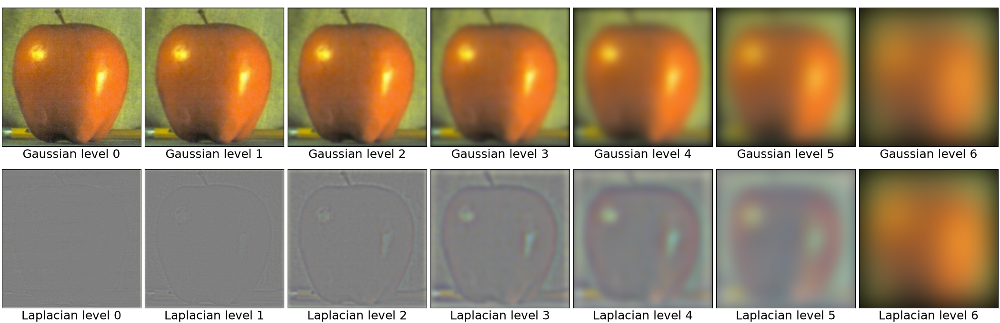
Figure 15: Gaussian and Laplacian stacks for an apple image.
Part 2.4 Multiresolution Blending
First, since we want to blend the images through the middle, we create a mask with the same size as the images. The left half of the mask is set to 1 and the right half is set to 0. After that, we have to build three stacks, the Laplacian stacks for both images (\(L_i^A\) and \(L_i^O\)) and the Gaussian stack for the mask (\(G_i^M\)). In each layer, we use this formula to blend the images: $$ L_i^B = L_i^A \cdot G_i^M + L_i^O \cdot (1 - G_i^M) $$ And the final result is obtained by summing the blended Laplacian stack across all levels, which is: $$ I^B = \sum_{i=0}^{N-1} L_i^B $$ Figure 16 illustrates the process of multi-resolution blending for the oraple image.
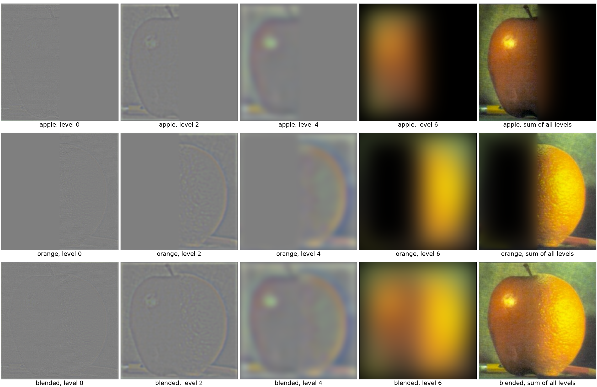
Figure 16: Blended process for oraple.
Other examples
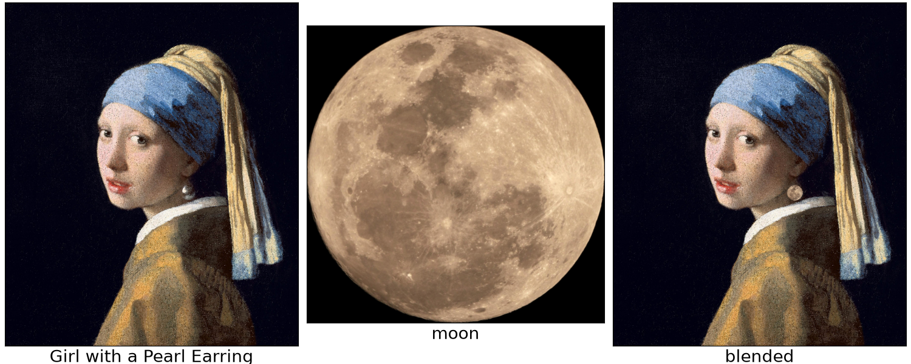
Figure 17: Blended process for Meisje met de maan and moon.
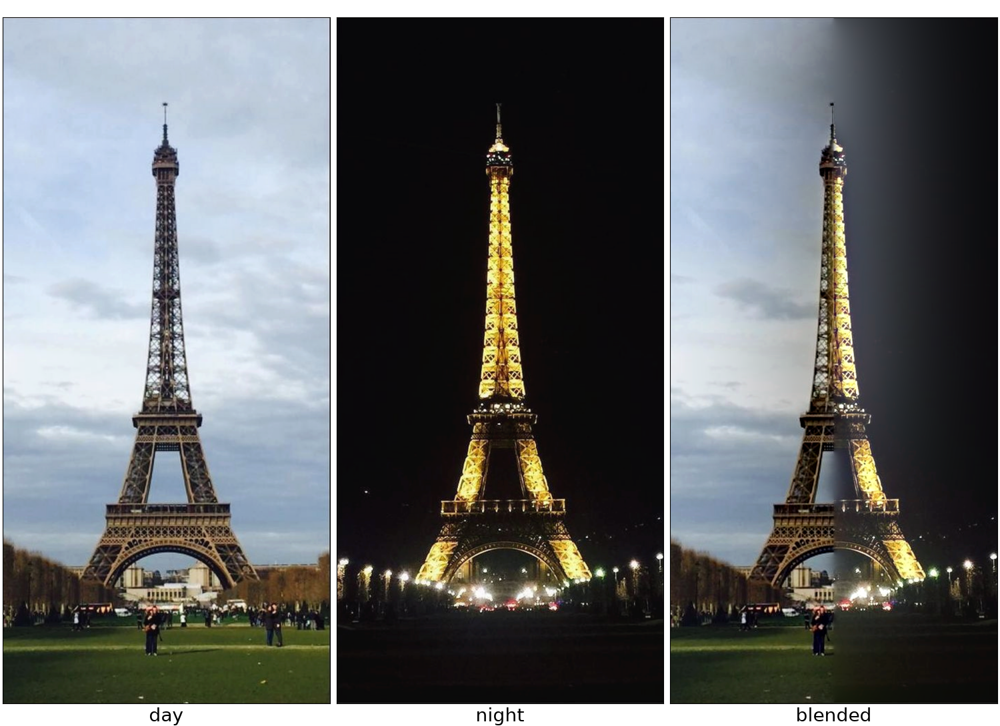
Figure 18: Blended process for Eiffel Tower.
Bells & Whistles
Try using color to enhance the effect
All of the blends above are computed in color. The mask and its Gaussian stack are computed and applied to each color channel separately. For the images' gaussian stack, each color channel convolved with the corresponding Gaussian filter separately. Figure 18 is an example of the result of color blending. Day and night scenes of the Eiffel Tower are combined using Laplacian stack blending technique.
Moreover, Figure 16 shows that the color comes almost entirely from the last level, i.e. the lowest-frequency layer. The other levels of the Laplacian stack mainly carry the edge information of the image, their edges are colored, but not very prominent.
Conclusion
The most important thing I learned is that the nature of convolution and image processing is feature extraction. Almost every manipulation in this project is the same at its core, it involves a gaussian blur and a subtraction to extract features from the image.